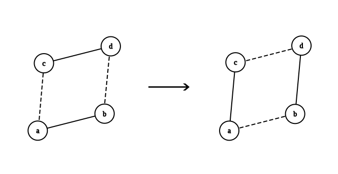

Degree Sequence¶
Consider an \(n\) -vertex graph \(G\).
Suppose the degree of vertex \(i\) is denoted by \(d_{i}\). Then the sequence \(d_{1}, d_{2}, ..., d_{n}\) is called the degree sequence of graph \(G\).
Graphic Sequence¶
We call the sequence \(d_{1}, d_{2}, ..., d_{n}\) a graphic sequence, if there exists a simple graph \(G\) with \(n\) vertices such that the degree sequence of its vertices equals the above sequence.
Havel-Hakimi Algorithm¶
This algorithm is used to determine graphic sequences. It is a greedy algorithm and each time connects the vertex with the largest degree to the vertices with the next largest degrees. If at any step, we are forced to connect an edge to a vertex of degree zero, it means the sequence is not graphic. The correctness of this greedy algorithm is equivalent to the theorem that a sorted sequence \(d_{1}, d_{2}, ..., d_{n}\) where \(d_{1} \ge d_{2} \ge ... \ge d_{n}\) is graphic if and only if the sequence \(d_{2} - 1 , d_{3} -1 , ... d_{d_1+1} -1, d_{d_1+2}, ... , d_{n}\) is graphic.
2-Switch¶
In the course of proving the Havel-Hakimi theorem, we define a 2-switch operation between four vertices \(a, b, c, d\) as follows: Assume edges exist between \(a, b\) and \(c, d\), but no edges exist between \(a, c\) and \(b, d\).
In this case, we remove the edges \(a, b\) and \(c, d\) from the graph, and add the edges \(a, c\) and \(b, d\). For better understanding, refer to the figure below.
{kind=link}

The crucial point about this transformation is that applying it preserves the degree sequence of the graph.
Proof of the Theorem¶
One direction of this theorem is trivial: if the sequence \(d_{2} - 1 , d_{3} -1 , ... d_{d_1+1} -1, d_{d_1+2}, ... , d_{n}\) is graphic, then by considering its corresponding graph and adding a vertex, we can show that the original sequence is also graphic.
Now we prove the converse. By assumption, the original sequence is graphic, and we must prove that the sequence \(d_{2} - 1 , d_{3} -1 , ... d_{d_1+1} -1, d_{d_1+2}, ... , d_{n}\) is also graphic. Among all graphs with a degree sequence equal to ours, consider one where vertex number 1 is connected to the maximum number of vertices from \(v_{2} , v_{3} , ... v_{d_1+1}\) (henceforth called good vertices; the rest will be called bad vertices).
If vertex number 1 is connected to all good vertices, removing it will construct the desired graph, and the claim holds. Otherwise, consider a good vertex not connected to vertex 1 and a bad vertex connected to vertex 1. If the good vertex has a neighbor that is not adjacent to the bad vertex, we can perform a double-swap operation on these four vertices, thereby increasing the number of good vertices adjacent to vertex 1 by one – contradicting the extremal assumption.
If not, all neighbors of the good vertex are also adjacent to the bad vertex. Furthermore, the bad vertex is adjacent to vertex 1. Thus, the degree of the bad vertex is strictly greater than that of the good vertex, contradicting the assumption that degrees are sorted. Therefore, the claim is proved, meaning the desired sequence is graphic.
This book is made by The Shaazzz contributors.
It is publicly available with cc-by-sa license.
Last updated at آوریل 19, 2025.
Rendered by Sphinx (4.3.2) and Minoo theme (Beta 0.9.7).